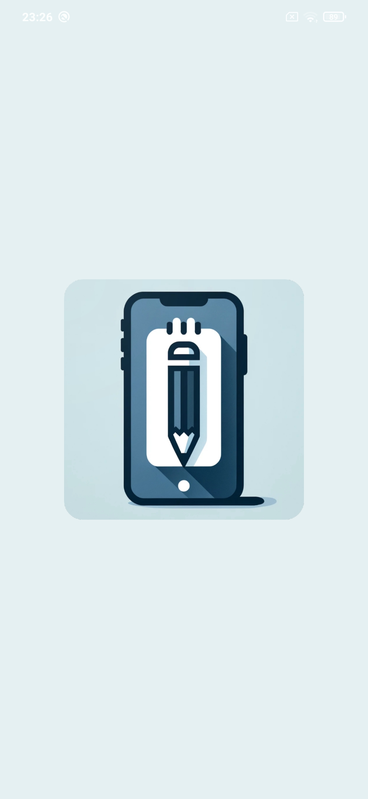
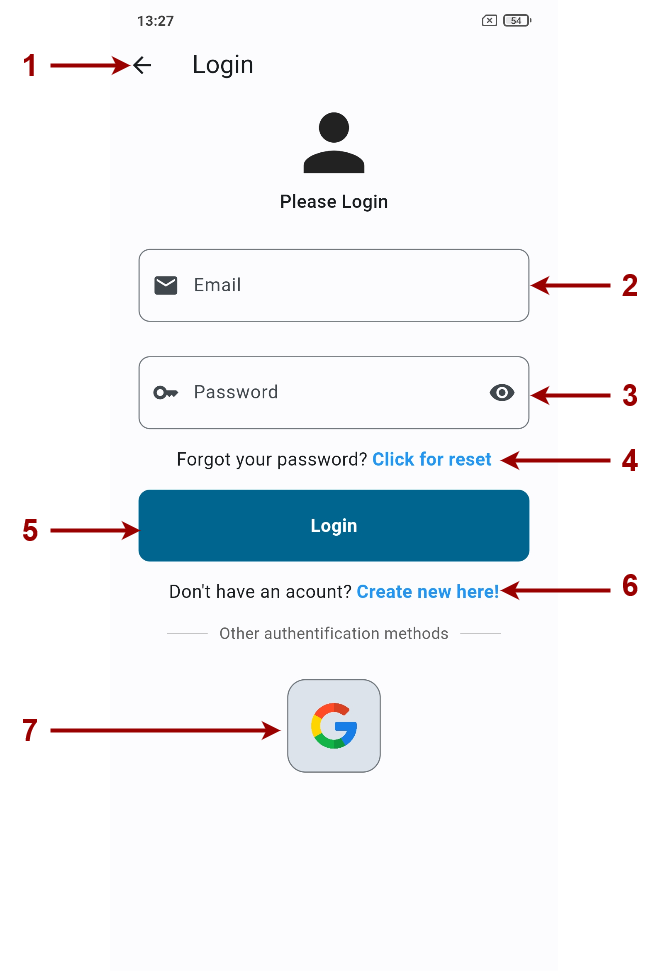

Děkuji, že jste si vybrali Notes pro správu vašich poznámek a úkolů. V tomto manuálu vám ukáži, jak se aplikace ovládá, abyste mohli plně využít její potenciál pro vytváření, ukládání a organizování vašich poznámek.
Při spuštění aplikace se zobrazí inicializační obrazovka s logem aplikace. Tato obrazovka indikuje, že se aplikace inicializuje.
Na stránku registrace se dostanete skrze vysouvací menu, po stisknutí tlačítka registrace. Při registraci máte na výběr vybrat si registraci pomocí kombinace emailu a hesla nebo Google účtem.
Na stránku registrace se dostanete skrze vysouvací menu, po stisknutí tlačítka přihlášení. Na následujícím obrázku je zobrazen obrázek přihlašovací obrazovkou s popsáním jednotlivých částí této obrazovky.
Může se stát, že uživatel zapomene heslo. Pro obnovu svého hesla se musí uživatel dostat na obrazovku s